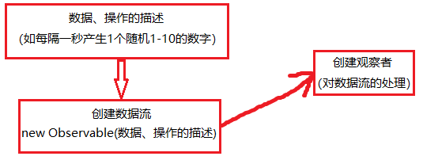

Angular示例
示例1：
{{demo1_title.textContent}}的联动值为：{{demo1_inputValueShow}}
示例2：
数组[11,12,13]采用forEach求和为：{{demo2_forEachRet}}，
数组[11,12,13]采用map每个值+10为：{{demo2_forMap}}，
输出示例1：{{demo2_forOutput}}，
输出示例2：{{demo2_forOutput}}
示例3：
*ngIf最好不要调用方法，不然该方法会被调用2次，
【*ngIf="angular_demo3_ngIf()"】为错误用法
示例4：
ngSwitch:
值是A
值是B
值是其它
RxJS示例
基本概念简单示意图：